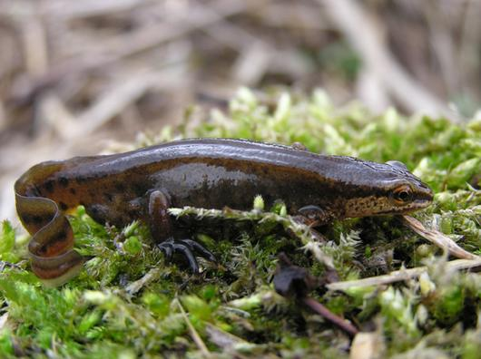
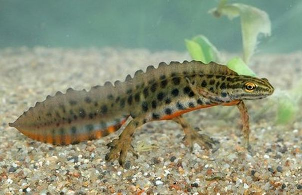
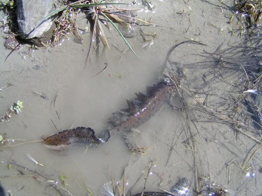
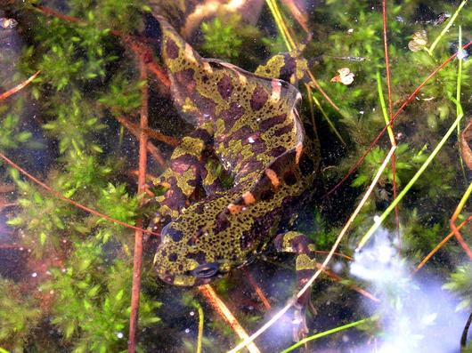

Triton palmé : Triturus Helveticus
Triton ponctué : Triturus vulgaris
Triton crêté : Triturus cristallus
Triton marbré : Triturus marmoratus
Pour le Triton ponctué : mares, trous d'eau et abreuvoirs peu profonds de la moitié Nord de la France.Le Triton palmé se rencontre sur l'ensemble du territoire national et fréquente les milieux les plus divers liés aux eaux stagnantes, du ruisseau forestier aux mares des zones littorales riches en chlorure jusqu'aux zones acides des tourbières de l'Est et du Centre.Le Triton marbré est plus inféodé à l'Ouest et au Sud-Ouest. C'est le plus forestier des tritons.Triton marbré et Triton à crête peuvent cohabiter ainsi que les Triton ponctué et Triton marbré.
Vers, mollusques et larves d'insectes voire de têtards d'anoures récemment éclos.
La reproduction est commune à tous les tritons.Le mâle dépose sur le fond d'une mare un spermatophore qui est capté par les lèvres du cloaque de la femelle. Lors de la ponte qui a lieu généralement en mai ; les femelles replient des feuilles de plantes aquatiques avec leurs pattes postérieures et y déposent un ou deux œufs blancs. Après une vie larvaire de deux à trois mois et une métamorphose qui se déroule en fin d'été - début de l'automne, les jeunes tritons sortent de l'eau pour se réfugier sous les pierres à proximité du point d'eau où ils sont nés.